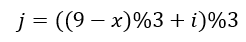

מי שלמד אוטומטים ושפות פורמליות במסגרת פורמלית מתבקש לשמור לעצמו את התשובה 
{kind=link}
לייק 1
יוצר אוזן המן. #קללל
15 לייקים
יש לי איזה ניחוש, לשלוח פה? זה יהיה או נורא מפדח או עלול להרוס למישהו אחר
תקציר
מזהה מספרים שמתחלקים ב 3 ?
לייק 1
אפשר
להסתיר
את התשובה ככה
חבל שמחקת, זה דווקא היה נכון
בטעות כתבתי פעמיים, זה עדיין נמצא בעריכה של התגובה המקורית. קצת רבתי עם המערכת על הסתרת הפרטים 
לייק 1
אז כן, ברכות! זו התשובה הנכונה
לייק 1
עוד לא קראתי את מחברת 6 ואין לי מושג מה אוטומטים עושים, אבל זה נראה כאילו
אם אנחנו במצב qi ומקבלים קלט x אז אנחנו עוברים למצב qj עבור 
2 לייקים
זו חשיבה מצוינת. חזרי עם תשובה אחרי מחברת 6 
לייק 1
צריכה להודות לאמא שלי שלימדה אותי לזהות
תקציר
לפי סכום הספרות במספר
לפני … שנים
, וגם התגובה של אלמוג היא רמז
2 לייקים
יכול רק לשער מהנסיונות שעשיתי פה
ניחוש
מספרים שמתחלקים ב3 ?
לייק 1
בהחלט 
לייק 1
יאאאא !! איזה התרגשות
תקציר
כי “הקלט” מורכב מתווים – כל התווים שהבאת ביחד הם אלו שיוצרים את הקלט. לצורך העניין – 1,3,6,2 הוא 1362, שהוא כן מתחלק ב־3.
2 לייקים
חזרתי וכעת אני יודעת להסכים עם האנשים שטענו שזה אוטומט שמחזיר האם מספר מתחלק ב-3 או לא
3 לייקים
מצאתי
מקבל מספרים המתחלקים בשלוש
הייתה לי הרגשה ואז הכנסתי אותו למכונה שכתבתי בתרגיל והיא עזרה לי לוודא

איך מתכנתים אוטומט שמציע לך לקנות בננה לוטי
תמורת מחיר מסויים???
אתה צריך להקיש את הקוד הנכון לפריט הזה
ואז לשלשל מטבעות והאוטומט צריך לוודא שהזנת את הסכום הרצוי או יותר
ואז יתן לך את מבוקשך + עודף אם צריך
ובתיאבון
רעיון נחמד, למרות שנראה לי שבהגדרה זה לא אס’ד.
אני דווקא חשבתי יותר בכיוון של משחק סולמות ונחשים (באחד ממיליון גרסאותיו), או אולי אפילו ששבש (שחמט?)
מתאים מאוד לשרשראות מרקוב, אם בא לך לקרוא
בגדול אם אתה מגדיר מהיא מחרוזת שמייצגת קניה של בננה:
- מחיר בננה 35
- קוד בננה 211
- מחרוזת שמייצגת קניה של בננה במכונה: 21135
אז אתה בהחלט יכול לעשות לזה אוטומט סופי דטרמיניסטי